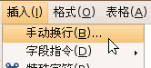
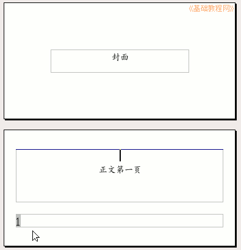

OpenOffice.org 教程之 Writer 文字处理
作者：TeliuTe 来源：基础教程网
九、页眉页脚 返回目录 下一课页面的右下角往往有一个页码，这个称作页脚，在上边的出现的称作页眉，下面我们来看一个练习；
1、插入页码
1）启动Writer，点菜单“文件－打开”命令，找到自己的文件夹，打开上次保存的“边框和背景”；
2）点菜单“插入－页脚－默认”命令，在页面的下边出来一个长条框，这里面可以放页脚，
在这个长条文本框里，可以输入文字，也可以插入页码，下面我们来学习插入页码；
3）点菜单“插入－字段指令－页码”命令，在长条中出现灰色的页码数；
这个页码是自动的，第一页是 1，当文章达到两页时，第二页会自动显示 2；
5）点菜单“插入－页眉－默认”命令，在上边出来长条框里输入“Writer练习 第9课”，这个将作为页眉出现在每一页的顶端；
点菜单“文件－另存为”，以“页眉页脚”为文件名，保存文件到自己的文件夹，
删除页眉页脚的方法是，再点页眉页脚菜单，把原来的够去掉就可以了；
2、首页不显示页码
1）点菜单“文件－新建－文本文档”，出来一个空白的新文档，输入“封面”并居中；
2）然后一直重复按回车键，直到出现下一页，在里面输入“正文第一页”，
这样有两页了，第一页是封面，不需要显示页码，从第二页开始显示；
3）点菜单“插入－页脚－默认”命令，出来页脚长条框，
再点菜单“插入－字段指令－页码”命令，在页脚文本框里插入页码，这时两页都显示了页码；
4）在第一页里点一下鼠标左键，把光标定位到第一页里，点菜单“格式－样式和格式”命令，
在出来的面板中选第四个按钮“页面样式”；
5）在下面的列表里找到“首页”双击选择，注意是双击，
这时第一页的页脚里就没有页码了，但下一页的页码是从“2”开始的，应该是从“1”开始；
6）把光标移到第一页封面页的最后面，点一下左键，把光标移到这一页的末尾，
点菜单“插入－手动换行”命令，出来一个对话框；

7）在出来的面板里，把类型选择“换页”，在样式中选择“默认”，打勾下面的“修改页码”，把页码设为“1”，然后点“确定”即可；
这时候页码就是从“1”开始了，以“封面正文”为文件名，保存文件到自己的文件夹；

本节学习了插入页眉页脚的基本操作，如果你成功地完成了练习，请继续学习下一课内容；本教程由86团学校TeliuTe制作|著作权所有，不得用于商业用途
基础教程网：http://teliute.org
美丽的校园……
转载和引用本站内容，请保留版权信息和本站链接。